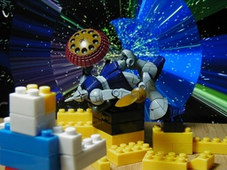
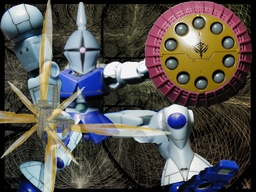

MS IN ACTION! MS-15 ギャン


MIA の GYAN です。機動戦士ガンダムで貴族趣味のマ・クベ大佐の搭乗したモビルスーツです。今となっては古いフィギュアですが、これは良いものです。 背景は Winamp の MilkDrop プラグインを WinShot したものです。 左側は少し原点回帰してみようと GIMP をセーブ以外には使っていません。ただ、左手前に白いカゲが見えます。そこがこれまでの違いで、プラスチックブロックを使って、少し番組のイメージを反映させてみました。 右側は色々な角度から撮った素材を GIMP で組み合わせています。「フィギュア写真」の範疇から離れてしまうのをおそれ、これまで避けてきた表現をしてみました。フィルタを使おうか迷ったのですが、技術がないのにあまり時間を掛けても意味がないので、それはまたの機会に。 更新：2007-07-21 初公開：2007年07月21日 02:43:12 最新版：2007年07月21日 02:43:12
Trackbacks: 《フィギュアについて》 from フィギュア フィギュアについて 受信： 2007-07-21 04:27:19 (JST) 《WinShotで画像貼り付け誰でも１０倍早くなる方法》 from 内職副業！誰でもすぐ出来るブログアフィリエイト方法 みなさん こんにちわ きつとです。 画像を取る時に スクリーンショット→ペイントに貼り付けていませんか？ 1枚ならまだしも何枚も同じ作業をするとなるとすごい不便ですよね 今日は、そんな悩みを解決するツールのご紹介です。 もちろん無料で使えるので、気に...... 受信： 2007-09-02 10:47:40 (JST) Links: MIA: http://www.tamashii.jp/mia/ MilkDrop: http://www.milkdrop.co.uk/ WinShot: http://www.woodybells.com/winshot.html GIMP: http://www.gimp.org/